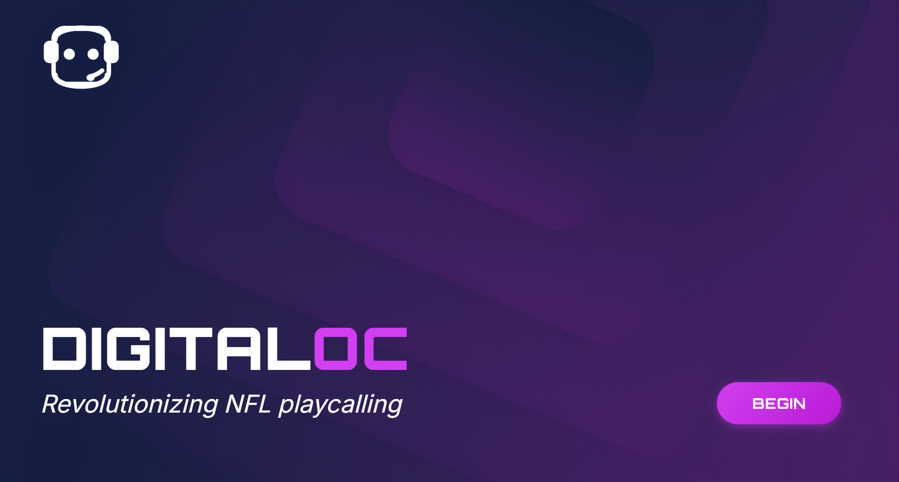
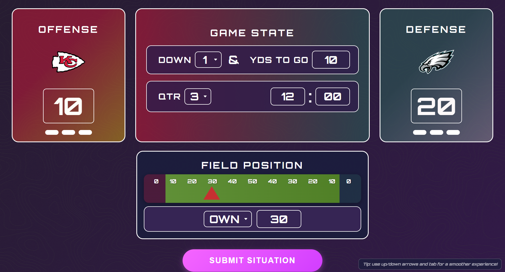
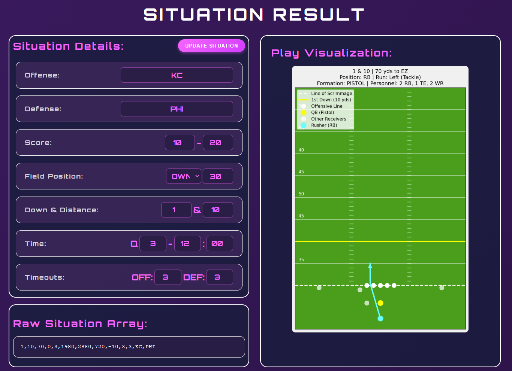

Projects




DigitalOC
Full stack ML-powered NFL play prediction system
Over the course of the Fall '25 semester my team and I developed DigitalOC from the ground up. We pulled and filtered over 40,00 in-game situations and stats from the past 4 seasons using pandas. Our data was then fed into a series of Scikit-Learn Random Forest models achieving a 91.7% accuracy on run/pass play predictions. Finally, a React.js frontend paired with Flask API calls provides a seamless and aesthetic user interface. I learned so much about Full-stack development, collaboration, version control, and the overall product building experience!